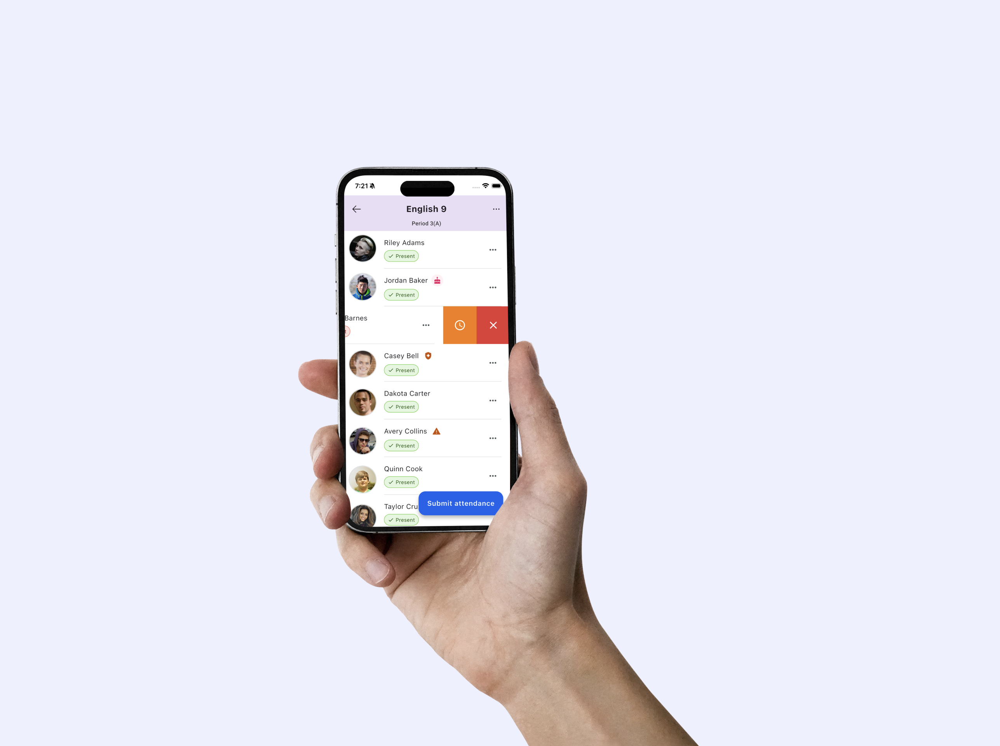
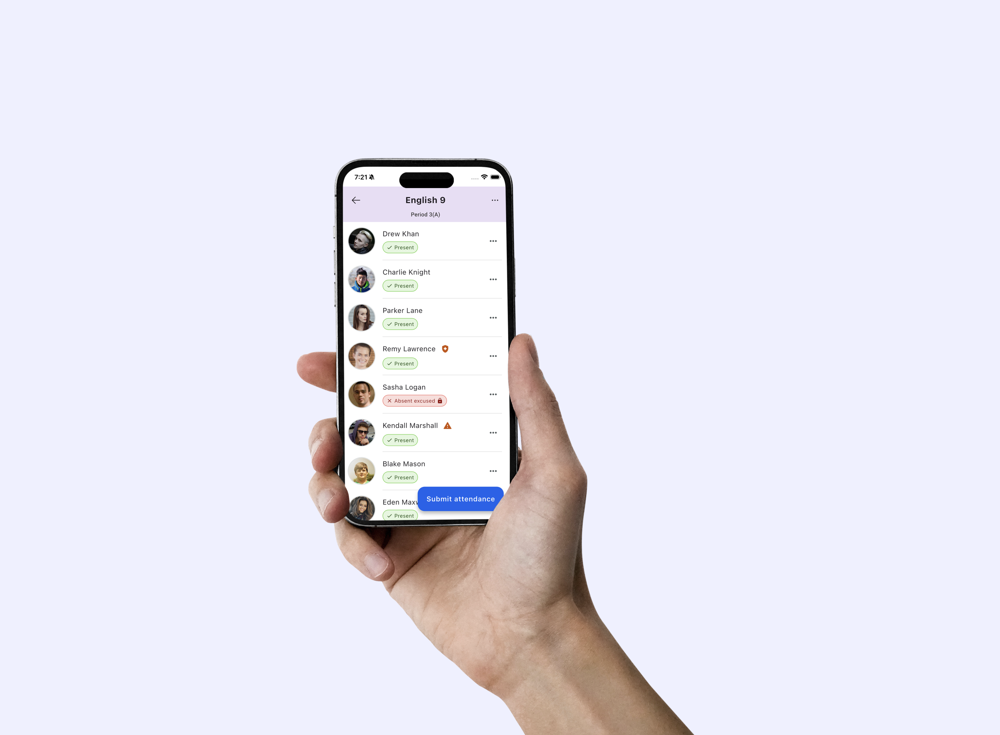
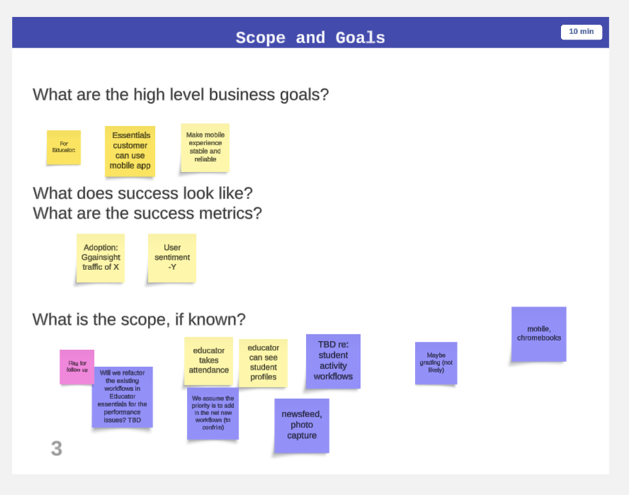
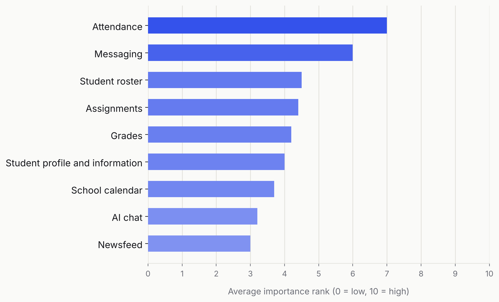
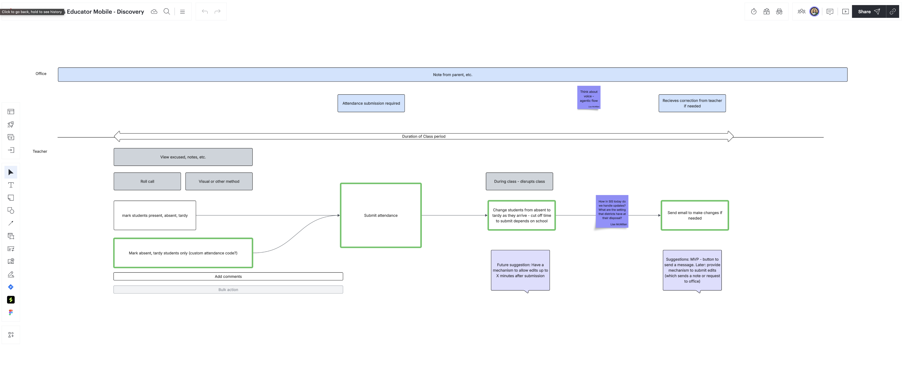
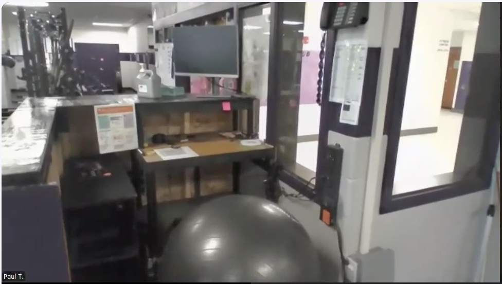
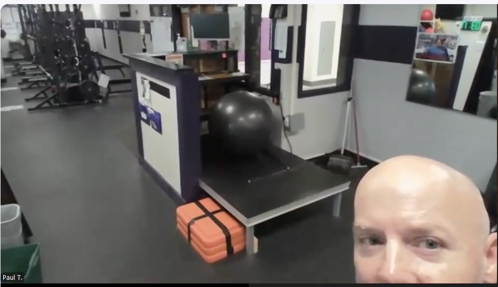
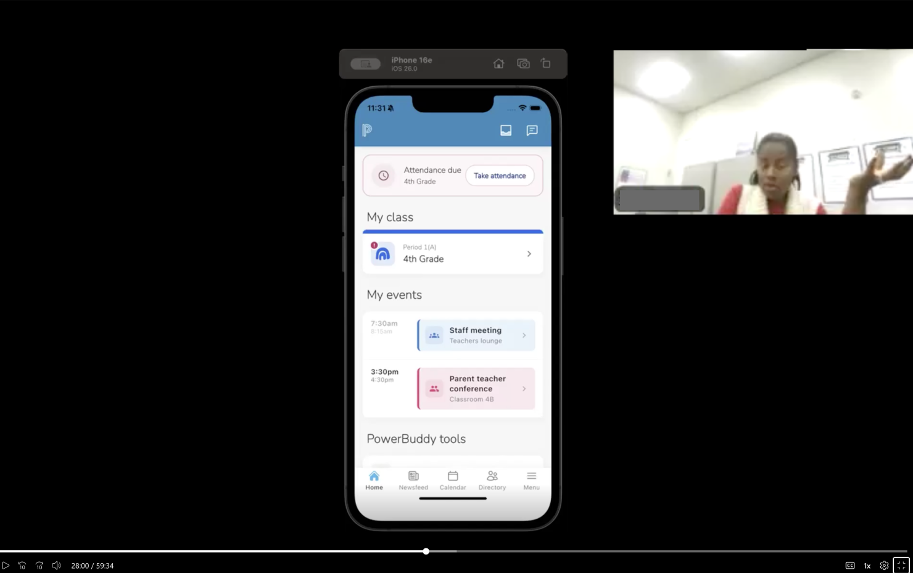
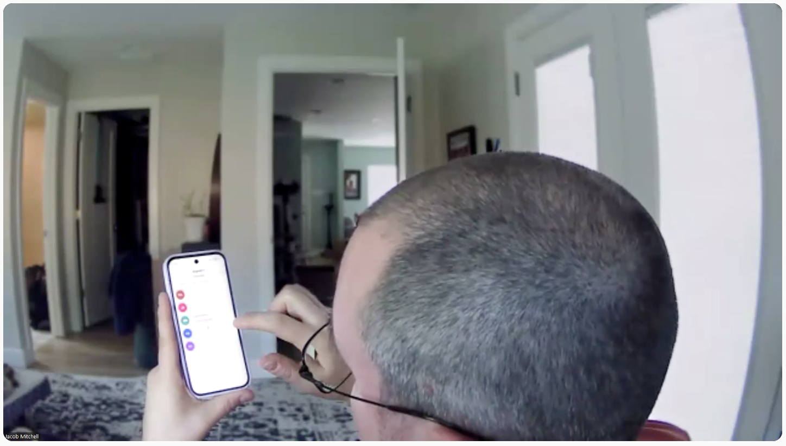
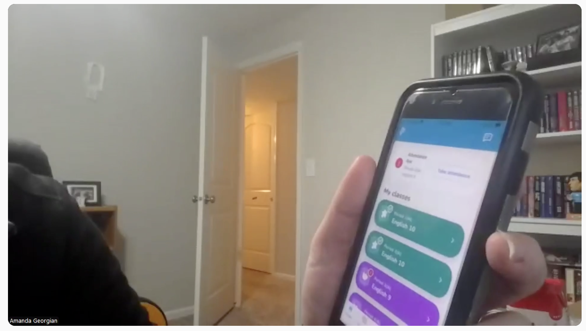

Case study
Streamlining attendance and family communication for teachers
Enhancing the mobile educator app with dead-simple workflows for teachers’ key tasks — designed to meet them where they are.
Role
UX Lead, PowerSchool
Platform
Native mobile (iOS & Android)
Focus
Strategy, UX research, rapid prototyping, native interaction design
Team
UX design (me), UX Researcher, Product manager, UX writer, Mobile architect, Mobile engineering lead, Mobile QA lead
Tools
Cursor, Figma, hand sketching, Dreamflow, UX Pilot
Summary
Upgraded the core experience of the mobile educator app to deliver streamlined attendance and family communication workflows, packaged in an enhanced landing experience — meeting teachers directly in their daily context to boost teacher adoption, leading to customer retention wins.


Educator Enhancements prototype — Flutter code application on iPhone 16 simulator
The problem and hypothesis
Problem
Despite a feature-rich MVP offering, teachers lacked a high-value mobile offering which understood their context and met the needs of key workflows, leading to low adoption, threatening customer retention.
Hypothesis
A workhorse roster with fast, mobile-friendly attendance and streamlined family communication will reduce teacher workload and increase customer retention.
The outcome
Business
~130%
Projected retention lift
User value
An intuitive, key-task-oriented mobile experience built for fast-paced teaching scenarios.
Experience leadership
I set the direction for the project, starting with stakeholder mapping, and setting project goals and metrics alongside product. I led our team through user needs-based requirement definition, followed by multiple design iterations and feedback rounds, wrapping up with usability testing. I pushed outside of my comfort zone by prototyping — experimenting with native code “vibe-coding” and partnering with engineering to set up a prototype in TestFlight.
- AI & prototyping
- Championed “vibe coding” and rapid mobile prototyping to explore native gesture workflows early.
- Native mobile focus
- Pioneered native mobile designs and hands-on testing to ensure intuitive touch controls.
- UX research leadership
- Defined and led the research scope and strategy to evaluate critical educator workflows.
- End-to-end execution
- Guided the design from concept through validation, keeping adoption and retention metrics as the north star.
“You’ve knocked it out of the park. I also love that you took initiative to build a TestFlight prototype so that we can literally get our hands on the design. Next level stuff! Seeing this makes me even more eager to go back and start rebuilding some of the Parent/Student app natively with Flutter.”
— Sam Spencer, Group VP of Engineering
Strategic decisions
- Strategic positioning
- Analyzed competitive market data to position the app as an essential daily tool supporting key tasks, surfacing mission-critical data, and supporting communications, rather than a secondary system.
- Lean research strategy
- Re-analyzed existing research to save cost, then launched targeted new studies only where design validation and usability testing were critical.



Key insights — what we learned about teachers’ realities
We began our moderated walkthrough activity with a select set of interview questions to fill in some of the knowledge gaps left over from the initial research repository analysis. Here are some of the key learnings we gained from these conversations and the walkthrough feedback:


“I take attendance at the beginning in the class, and I have to submit it right away. Well, then Joe comes in, and Kelly comes in, and Jennifer comes in, and Scott comes in, and every time they come in, I got to run over [to my desk] and fix the attendance. So, if I had a mobile device…”
— Phys ed teacher
01
There’s no single way to take attendance
A common behavior with the teacher persona is the personalized approach they take to many tasks in their day. Taking attendance is no different. It happens mid-lesson, at the door, on paper, on laptops, on systems on the classroom wall — and can be conducted with an additive or subtractive mental model. For gym teachers and on field trips, it’s not happening in the classroom at all.
02
Teachers need to be able to submit… and re-submit at any point in the day
Attendance is due to be officially submitted (for safety and reporting reasons) at specific, building or district mandated times, but must be editable by the teacher — and in reality, they might not get to editing it in the system until the end of the day. A mobile option helps the odds that they will edit it sooner, but it’s still a common use case that needs to be accounted for.
03
Taking attendance on a mobile device solves a major privacy concern
By taking attendance on a separate device, teachers can stop worrying about sharing sensitive data over their screen projections. They can keep the material they project up uninterrupted and perform a separate, discreet task using a mobile device.
04
Contacting families by mobile device is a game changer, with strings attached
The ability to contact families with a couple taps on a mobile device was well received by teachers, but they needed more details about the relationship of guardians than our data set currently allowed, and they had major reservations about using unmarked personal phone numbers to communicate.

Design details that delighted teachers
- Automated in-app reminders
- Automated reminders delighted teachers using the app.
- Single tap communications
- Participants in usability tests could single-digit tap to contact a guardian.
- Gesture-based interactions
- Prioritized fast, gesture-driven interactions to minimize taps while a teacher is mid-instruction. Single tap (and assistive tech support) was also included to support all teachers.
- Push notifications
- To remind teachers outside of the app.
- Contextual indicators
- Labels and badges — like birthdays, language support, and other sensitive student flags — give teachers critical context in the moment.
- Micro-notes
- Quick comment boxes (e.g. “Missed bus”) added vital context to attendance records.
“I like the swipe because most of the time you’re one handed and you might have your hands with your drinks and your coffee. So it was nicest to go left and right rather than having to tap.”
— Educator feedback


Reflections and what’s next
What I’d do differently next time
Establish a structured beta period with active educators early on, to collect real-world usage feedback before launch.
Ensure that business metrics aligned with product managers directly tie to key OKRs for the business unit.